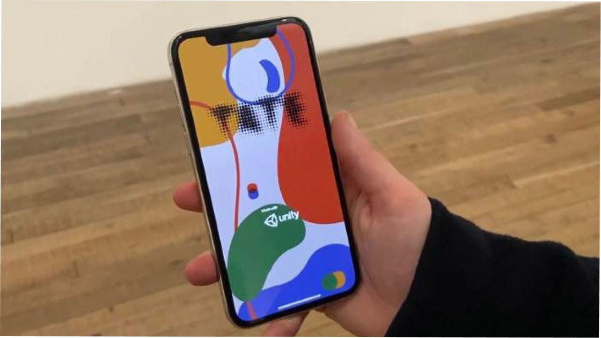
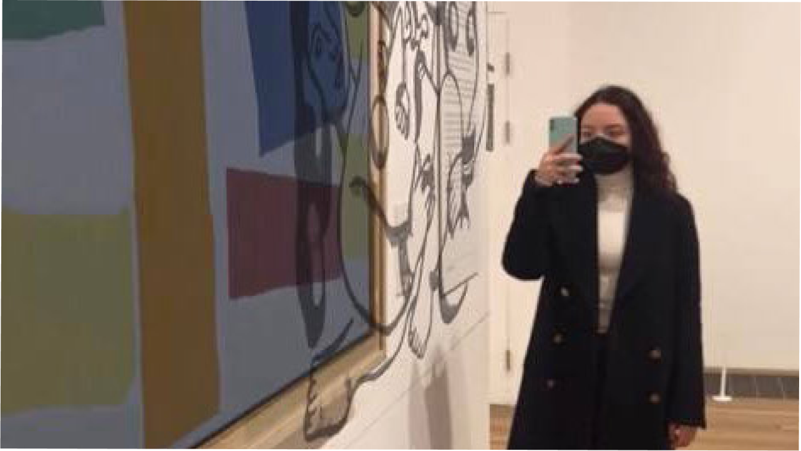
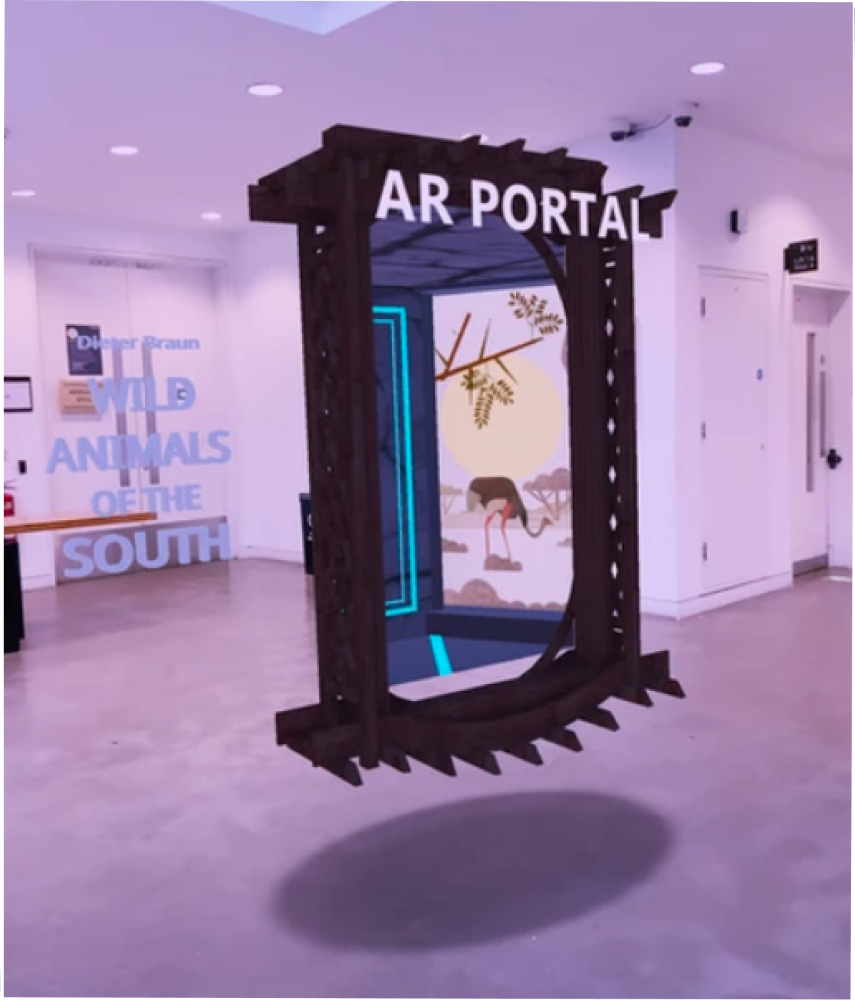
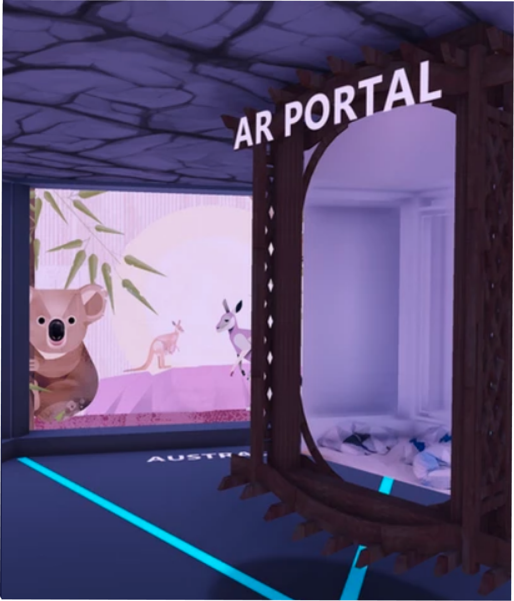
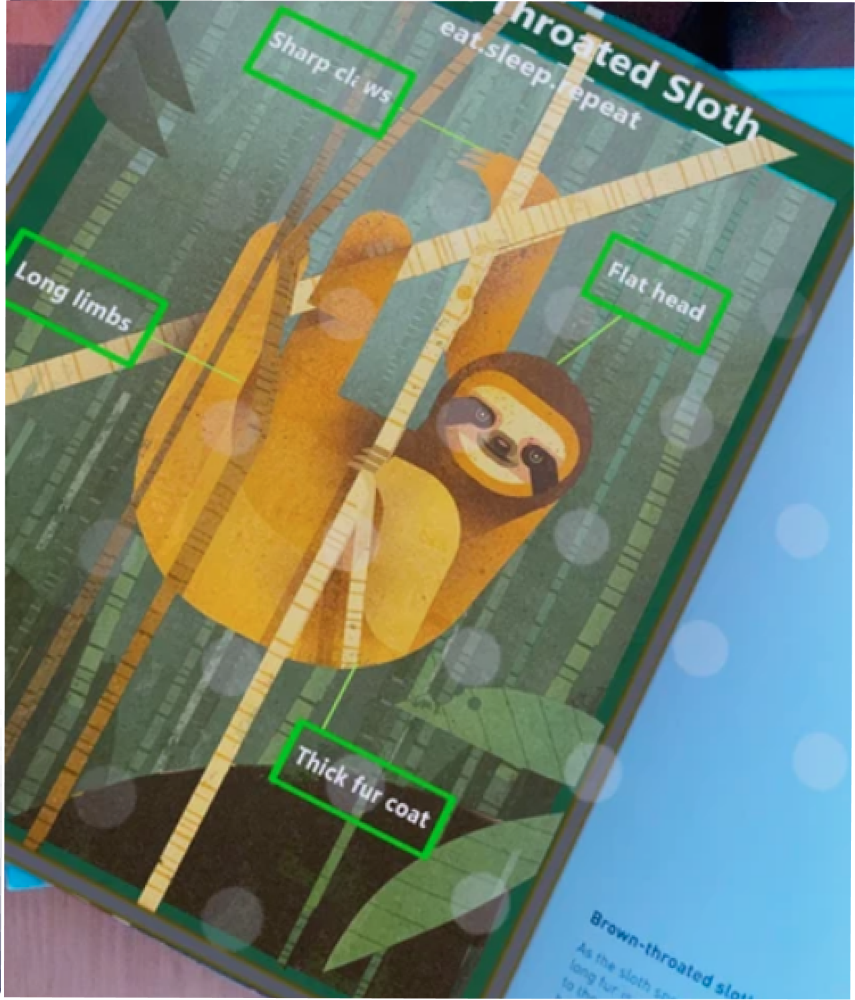
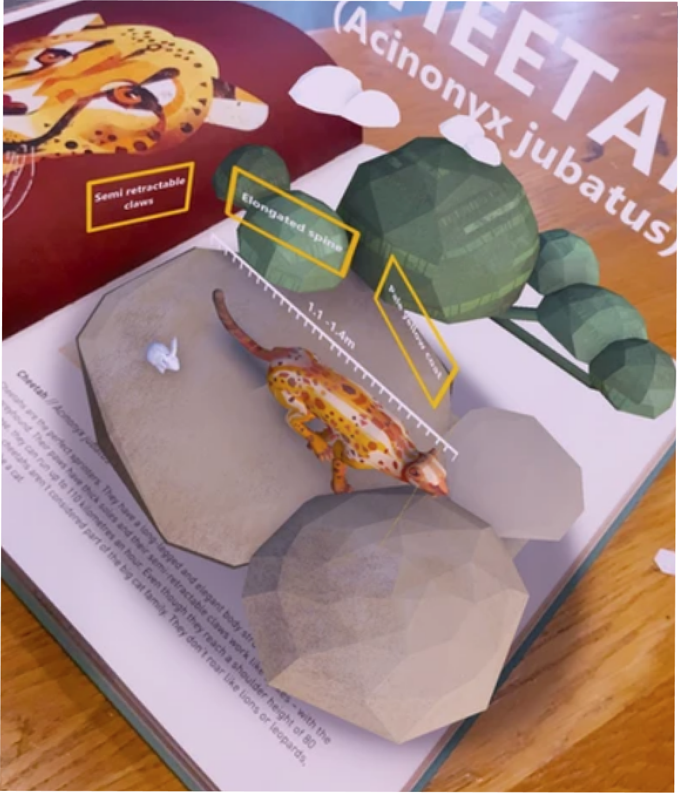
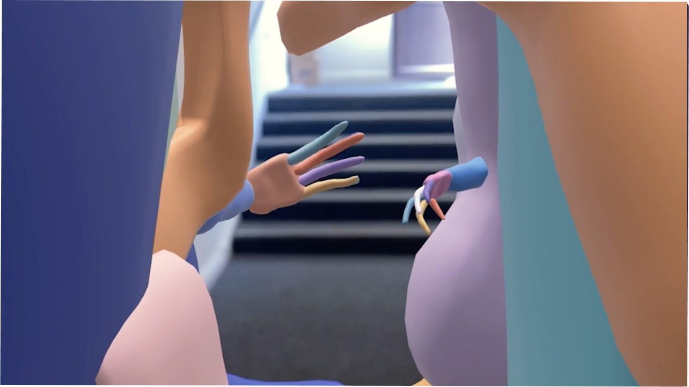
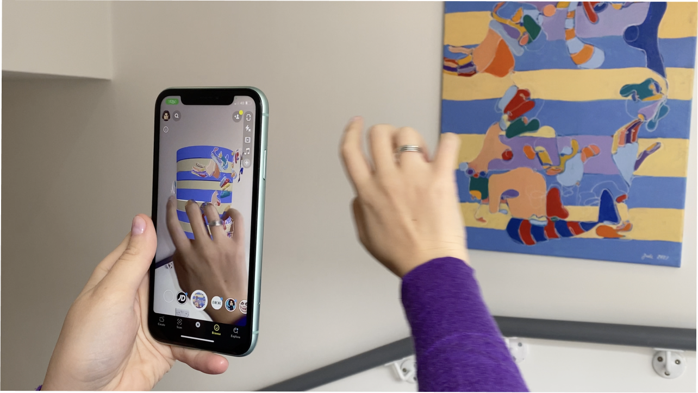
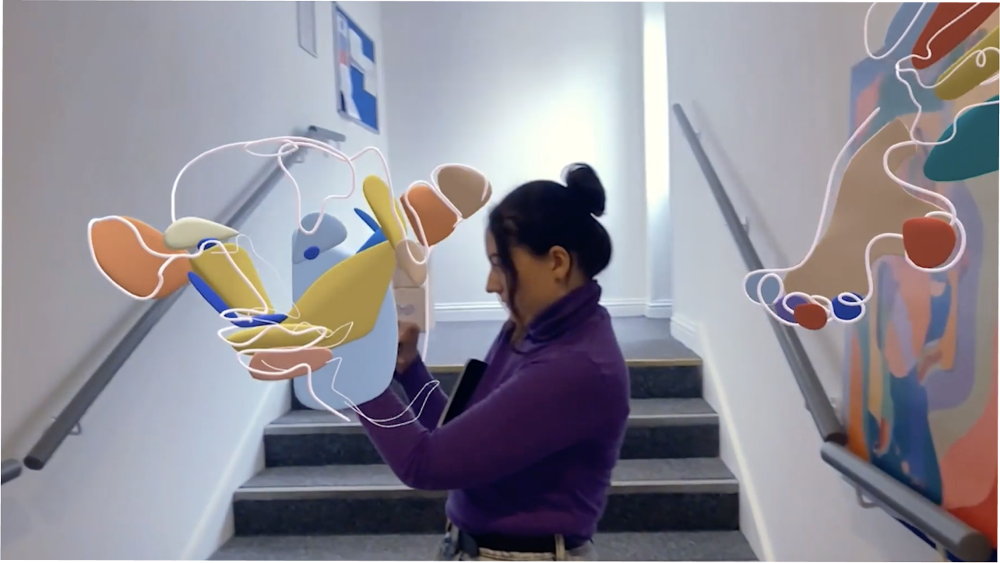

XR / AR · Selected Prototypes · Goldsmiths MA
XR Lab
Overview
The XR Lab is where I explore interaction and space outside of broadcast constraints — AR experiences, interactive installations, and spatial interfaces built for mobile and headset. Most of this work emerged from my MA in Virtual & Augmented Reality at Goldsmiths, and it feeds directly back into how I think about motion and GFX: how things behave in space, not just how they look on a screen.
AR Art
Personal prototype — an augmented reality application designed to bring paintings to life for younger audiences. Built with Unity 3D and C#, with assets created in Photoshop, Illustrator, and Maya. The app overlays interactive digital layers onto artworks, allowing users to explore paintings in novel ways — learning about the pieces and artists while interacting with them in immersive, visually stimulating ways. Designed to make modern art more accessible and appealing to children and teenagers.



Animal Portal
An exploratory AR reading experience built around Dieter Braun's Animals of the South — making books come to life with augmented reality. The project transformed book illustrations into interactive 3D models with hand-painted textures, leaf particle systems, and animation. Users scan pages to reveal 3D animals in their environment, with habitat information and sound design including ambient music and animal effects.
Built as part of the MA in Virtual & Augmented Reality at Goldsmiths.




AR Exhibition
Personal prototype — an immersive AR exhibition featuring the paintings of artist Jade Krym. Four unique Snapchat lenses were developed, each designed to animate or interact with a painting in a distinct way — from layered animation to touch interaction. Built using JavaScript in Lens Studio, with 3D modelling in Maya and Gravity Sketch (VR), and visual assets in Photoshop and Substance Painter.
A demonstration of AR as a medium for making art exhibitions globally accessible through a smartphone.



Credit
All prototypes: concept, design and build by Alex Kielesinska. Animal Portal built during MA in Virtual & Augmented Reality at Goldsmiths. AR Exhibition features paintings by Jade Krym.